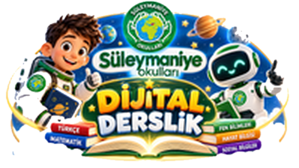

<!doctype html><html lang="tr"><meta charset="utf-8"><meta name="viewport" content="width=device-width,initial-scale=1"><title>Maden Kâşifleri</title><style>*{box-sizing:border-box}body{margin:0;font:18px system-ui;background:linear-gradient(135deg,#e4f7ff,#f7e2bd);color:#303052}main{max-width:1050px;margin:auto;padding:12px}header{text-align:center;background:linear-gradient(125deg,#3945aa,#8054cf 65%,#ed83b2);color:white;border:4px solid white;border-radius:26px;padding:20px}header h1{font-size:clamp(28px,5vw,50px);margin:8px}header .toolbar{display:flex;justify-content:space-between;gap:8px;flex-wrap:wrap}.hero-brand{width:170px;height:62px;object-fit:contain;background:white;border-radius:16px;padding:5px}.hero-art{font-size:38px}button,a{font:inherit;font-weight:bold;border:0;border-radius:14px;padding:12px;background:#fff;color:#303052;text-decoration:none;cursor:pointer}section{background:white;border-radius:24px;padding:18px;margin:16px 0;text-align:center}.cards{display:flex;gap:12px;flex-wrap:wrap}.cards button{flex:1;min-width:180px;background:#bdecc9;padding:25px;box-shadow:0 6px #79ba91}.cards button:nth-child(2){background:#c9ddff;box-shadow:0 6px #8aa8d6}.cards button:nth-child(3){background:#ffe0a1;box-shadow:0 6px #d6ae66}.cards span{display:block;font-size:56px}canvas{width:100%;display:block;touch-action:none;border-radius:20px}#stats{background:#e0f6eb;border-radius:12px;padding:10px;font-weight:bold}#goal{background:#fff1b9;border-radius:12px;padding:12px;font-weight:bold}#feedback{min-height:32px;font-weight:bold}#next{background:#ffd263}[hidden]{display:none!important}</style><main><header><div class="toolbar"><a href="oyun-test-merkezi.html?section=games">← Oyunlar</a> <button id="sound">🔊 Ses açık</button> <button id="full">⛶ Tam ekran</button></div><div class="hero-art">✨ ⛏️ 💎</div><h1>⛏️ Maden Kâşifleri</h1><p>Kaz · Keşfet · Taşı · Üret!</p><p id="playerName">Süleymaniye Okulları · 3. Sınıf</p></header><section id="menu"><h2>Yer altı macerasına başla!</h2><div class="cards"><button data-mode="0"><span>⛏️</span>Kaz ve Keşfet<br>10 görev</button><button data-mode="1"><span>🚃</span>Maden Vagonları<br>10 görev</button><button data-mode="2"><span>🏭</span>Maden Fabrikası<br>10 görev</button></div></section><section id="game" hidden><div id="stats"></div><p id="goal"></p><canvas id="field" width="900" height="480" aria-label="Etkileşimli maden sahnesi"></canvas><p id="feedback" role="status"></p><button id="next" hidden>Sonraki görev ➜</button> <button id="home">← Menü</button></section><section id="result" hidden><h1>🏆 Usta Madenci!</h1><p id="resultText"></p><button id="again">Tekrar oyna</button> <button id="menuBack">Menü</button></section></main><script>const $=id=>document.getElementById(id),c=$('field'),g=c.getContext('2d');const ores=[{n:'Demir',color:'#aeb9c5',use:'Çelik araç gereç',icon:'🔧',fact:'Demir, çelik üretiminde kullanılır.'},{n:'Bakır',color:'#dc854e',use:'Elektrik kablosu',icon:'🔌',fact:'Bakır, elektriği iyi iletir.'},{n:'Altın',color:'#ffcf45',use:'Takı',icon:'💍',fact:'Altın, takı yapımında kullanılır.'},{n:'Kömür',color:'#45454f',use:'Isı enerjisi',icon:'🔥',fact:'Kömür bir enerji kaynağıdır.'},{n:'Mermer',color:'#eee7df',use:'Zemin kaplaması',icon:'🏛️',fact:'Mermer bir kayaçtır; yapı ve süslemede kullanılır.'}];let studentFirstName='arkadaşım',mode=0,i=0,stars=0,errors=0,sound=true,locked=false,hits=0,drag=null,fx=0,order=[],targets=[],ctx;function speak(t){if(sound&&window.speechSynthesis){speechSynthesis.cancel();let u=new SpeechSynthesisUtterance(t);u.lang='tr-TR';speechSynthesis.speak(u)}}function tone(ok){if(!sound)return;try{ctx??=new(window.AudioContext||window.webkitAudioContext)();ctx.resume();let o=ctx.createOscillator(),a=ctx.createGain();o.frequency.value=ok?740:180;o.type=ok?'sine':'triangle';o.connect(a);a.connect(ctx.destination);a.gain.value=.08;a.gain.exponentialRampToValueAtTime(.001,ctx.currentTime+.2);o.start();o.stop(ctx.currentTime+.2)}catch{}}function show(id){['menu','game','result'].forEach(x=>$(x).hidden=x!==id)}function shuffle(a){return a.map(v=>[Math.random(),v]).sort((a,b)=>a[0]-b[0]).map(x=>x[1])}function start(m){mode=m;i=stars=errors=0;order=[...shuffle(ores),...shuffle(ores)];show('game');render()}function render(){hits=0;locked=false;drag=null;fx=0;let o=order[i];targets=shuffle([o,...shuffle(ores.filter(x=>x!==o)).slice(0,2)]);$('stats').textContent='Görev '+(i+1)+'/10 · ⭐ '+stars;$('goal').textContent=mode===0?'Kazmayı kayaca sürükle ve üç kez kır!':mode===1?o.n+' örneğini doğru vagona taşı!':o.n+' örneğini uygun kullanım alanına taşı!';$('feedback').textContent='';$('next').hidden=true}function rect(x,y,w,h,col){g.fillStyle=col;g.beginPath();g.roundRect(x,y,w,h,14);g.fill()}function txt(t,x,y,size=24,col='#fff'){g.font='bold '+size+'px system-ui';g.fillStyle=col;g.textAlign='center';g.fillText(t,x,y)}function rock(x,y,o,r=48){g.fillStyle=o.color;g.strokeStyle='#ffffff88';g.lineWidth=4;g.beginPath();for(let j=0;j<7;j++){let a=j*2*Math.PI/7;let rr=r*(j%2?.8:1);g.lineTo(x+Math.cos(a)*rr,y+Math.sin(a)*rr)}g.closePath();g.fill();g.stroke()}function draw(){let o=order[i]||ores[0];g.fillStyle='#48394f';g.fillRect(0,0,900,480);for(let k=0;k<10;k++){g.fillStyle=k%2?'#72574e':'#5b4650';g.beginPath();g.moveTo(k*100,0);g.lineTo(k*100+50,80+(k%3)*25);g.lineTo(k*100+100,0);g.fill()}rect(0,380,900,100,'#927054');if(mode===0){if(!locked){rock(450,210,{color:'#8b8584'},105);g.strokeStyle='#40353c';g.lineWidth=5;for(let k=0;k<hits;k++){g.beginPath();g.moveTo(420+k*25,130);g.lineTo(460-k*10,200);g.lineTo(415+k*35,280);g.stroke()}txt('Vuruş: '+hits+'/3',450,350)}else{rock(450,210,o,75);txt(o.n,450,330,36);txt('✨',450,130,48)}if(!locked){let p=drag||{x:130,y:360};txt('⛏️',p.x,p.y,85);txt('Kazma',130,420)}}else{for(let k=0;k<3;k++){let t=targets[k],x=165+k*285;rect(x-125,65,250,155,mode===1?'#476a91':'#a46d45');txt(mode===1?'🚃':t.icon,x,125,48);txt(mode===1?t.n:t.use,x,183,22);if(mode===1){txt('⚫                 ⚫',x,235,24);g.fillStyle='#aaa';g.fillRect(x-130,245,260,7)}}if(!locked){let p=drag||{x:450,y:350};rock(p.x,p.y,o);txt(o.n,p.x,p.y+70,26)}else{let k=targets.indexOf(o),x=165+k*285;let elapsed=(performance.now()-fx)/1000;rock(mode===1?Math.min(850,x+elapsed*160):x,150,o,25);txt(mode===1?'🚃':o.icon,x,310,64)}}if(locked&&performance.now()-fx<1100){for(let k=0;k<8;k++){let a=k*Math.PI/4,t=(performance.now()-fx)/1100;txt('⭐',450+Math.cos(a)*t*160,220+Math.sin(a)*t*140,30)}}requestAnimationFrame(draw)}function point(e){let r=c.getBoundingClientRect();return{x:(e.clientX-r.left)*900/r.width,y:(e.clientY-r.top)*480/r.height}}c.onpointerdown=e=>{if(locked)return;let p=point(e),x=mode===0?130:450,y=mode===0?360:350;if(Math.hypot(p.x-x,p.y-y)<95){drag=p;c.setPointerCapture(e.pointerId)}};c.onpointermove=e=>{if(drag)drag=point(e)};c.onpointercancel=()=>drag=null;c.onpointerup=e=>{if(!drag||locked)return;let p=point(e);drag=null;if(mode===0){if(Math.hypot(p.x-450,p.y-210)<115){hits++;tone(false);if(hits===3)win();else $('feedback').textContent='Kaya çatladı! Bir daha vur.'}return}let k=targets.findIndex((_,k)=>Math.abs(p.x-(165+k*285))<125&&p.y>=65&&p.y<=240);if(k<0)return;if(targets[k]===order[i])win();else{errors++;tone(false);$('feedback').textContent='Bu doğru yer değil, tekrar dene!';speak('Tekrar dene '+studentFirstName)}};function win(){locked=true;stars++;fx=performance.now();tone(true);let o=order[i];$('stats').textContent='Görev '+(i+1)+'/10 · ⭐ '+stars;$('feedback').textContent='🌟 Tebrikler! '+o.fact;speak('Tebrikler '+studentFirstName+'! '+o.fact);$('next').hidden=false}$('next').onclick=()=>{if(++i<10)return render();show('result');$('resultText').textContent=stars+' yıldız · '+errors+' yanlış yerleştirme';speak('Tebrikler '+studentFirstName+'!')};document.querySelectorAll('[data-mode]').forEach(b=>b.onclick=()=>start(+b.dataset.mode));$('again').onclick=()=>start(mode);$('home').onclick=$('menuBack').onclick=()=>show('menu');$('sound').onclick=()=>{sound=!sound;$('sound').textContent=sound?'🔊 Ses açık':'🔇 Ses kapalı'};$('full').onclick=()=>document.fullscreenElement?document.exitFullscreen():document.documentElement.requestFullscreen?.();function setPlayerName(display){if(typeof display!=='string'||!display.trim())return;const first=display.trim().split(/\s+/)[0];studentFirstName=first.charAt(0).toLocaleUpperCase('tr-TR')+first.slice(1).toLocaleLowerCase('tr-TR');$('playerName').textContent='👩‍🚀 Oyuncu: '+studentFirstName;}
(async()=>{try{const {createClient}=await import('https://cdn.jsdelivr.net/npm/@supabase/supabase-js@2.57.4/+esm');const db=createClient('https://zhmkyfouskthqgrhvhqp.supabase.co','sb_publishable_YcqB4BO9knYzHk4KKLye3A_ilBb6I9u',{auth:{persistSession:true,autoRefreshToken:true,detectSessionInUrl:false}});let {data:{user}}=await db.auth.getUser();if(!user){const {data:{session}}=await db.auth.getSession();user=session?.user}if(user){const {data,error}=await db.from('profiles').select('display_name,role,active').eq('id',user.id).maybeSingle();if(!error&&data?.role==='student'&&data.active)setPlayerName(data.display_name);}}catch(e){console.warn('Öğrenci adı alınamadı',e)}if(studentFirstName==='arkadaşım')$('playerName').textContent='👤 Adın görünmüyor mu? Adımı düzelt düğmesine bas.';})();
draw();</script></html>